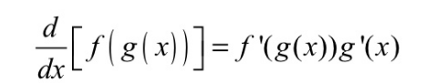
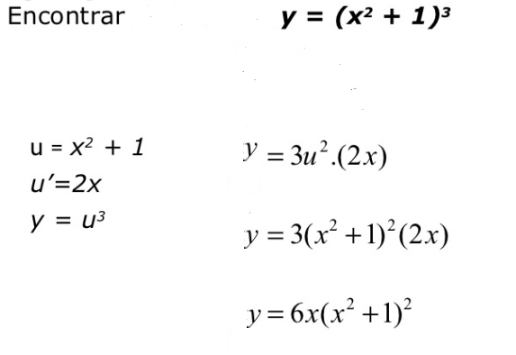
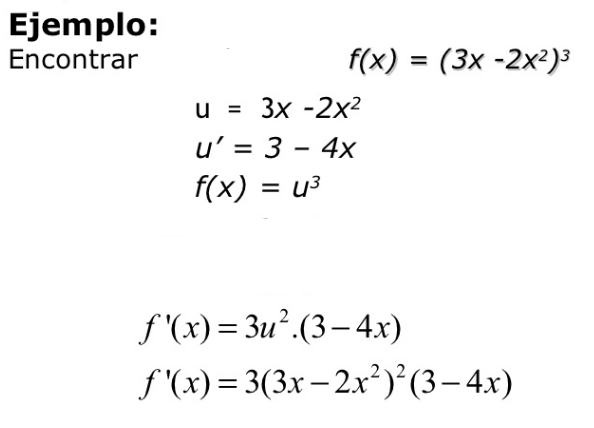
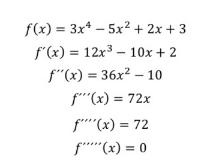

Regla de la cadena

Regla de la Cadena
La regla de la cadena es una formula para la derivada de la composicion de dos funciones.
Formula:

Ejemplo:

Ejemplo2

Funciones Trigonometricas

Ejemplo:

Orden superior
Una funcion de orden superior, es aquella expersion que puede ser algebraica o trascendente a la cual es posible derivarla varias veces.
Para resolver las derivadas de orden superior se debe aplicar las respecitvas propiedades de las derivadas para el desarrollo de estas
Ejemplo:

Demostracion